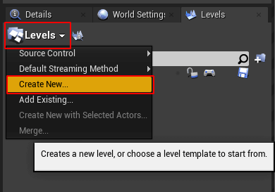
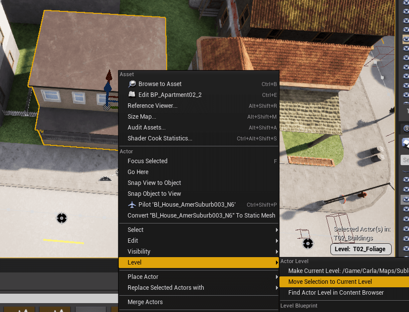
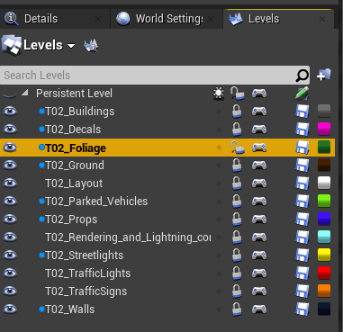

Customizing Maps: Layered Maps
Utilizing levels in your custom map enables multiple people to work on a single map concurrently. It also allows you to use the Python API to load and unload layers on your map during a simulation, just like the layered CARLA maps.
This guide will explain how to add a new level, how to add assets to a level, and how to configure a level to be always loaded or not.
Add a new level
All new levels in your map will be nested within the parent level, known as the Persistent Level. To create a new level:
1. Open the levels panel.
- In the Unreal Engine editor, open Window from the menu bar.
- Click on Levels.
2. Create a new level.
- In the Levels panel, click on Levels and select Create New....
- Choose Empty Level.
- Save the level in
Content/Carla/Maps/Sublevels/<map_name>/. To integrate the level with the CARLA Python API, use the naming convention<map_name>_<layer_name>, e.g.,TutorialMap_Buildings. For a list of available layers, check here.

Add assets to a level
1. Select the level to which you want to add assets.
In the Levels panel, double-click the level to which you would like to add assets. Make sure the level is unlocked by toggling the lock icon.
2. Select the assets to add.
- Select all the assets you would like to add to the level.
- Right-click and go to Level.
- Click on Move Selection to Current Level.
3. Save the level.
If a level has pending changes to save, you will see a pencil icon next to it in the Levels panel. Click this to save the changes.

Configure level loading options
Levels can be configured to be able to be toggled or to be always loaded. To configure the level for either option:
- Right-click the level in the Levels panel and go to Change Streaming Method.
- Choose the desired setting:
- Always Loaded: The level will not be able to be toggled via the Python API.
- Blueprint: The level will be able to be toggled via the Python API. A blue dot will appear beside the level name.
Regardless of the setting, you will still be able to toggle the level in the editor by pressing the eye icon.

Next steps
Continue customizing your map using the tools and guides below:
- Add and configure traffic lights and signs.
- Add buildings with the procedural building tool.
- Customize the road with the road painter tool.
- Customize the weather
- Customize the landscape with serial meshes.
Once you have finished with the customization, you can generate the pedestrian navigation information.
If you have any questions about the process, then you can ask in the forum.